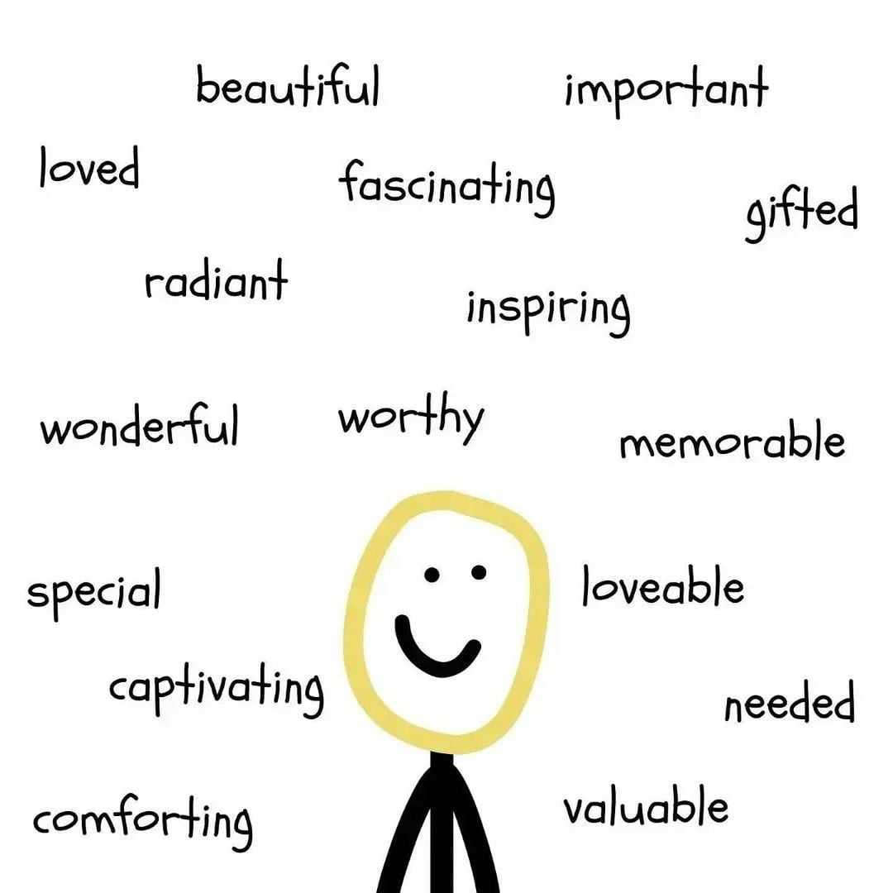
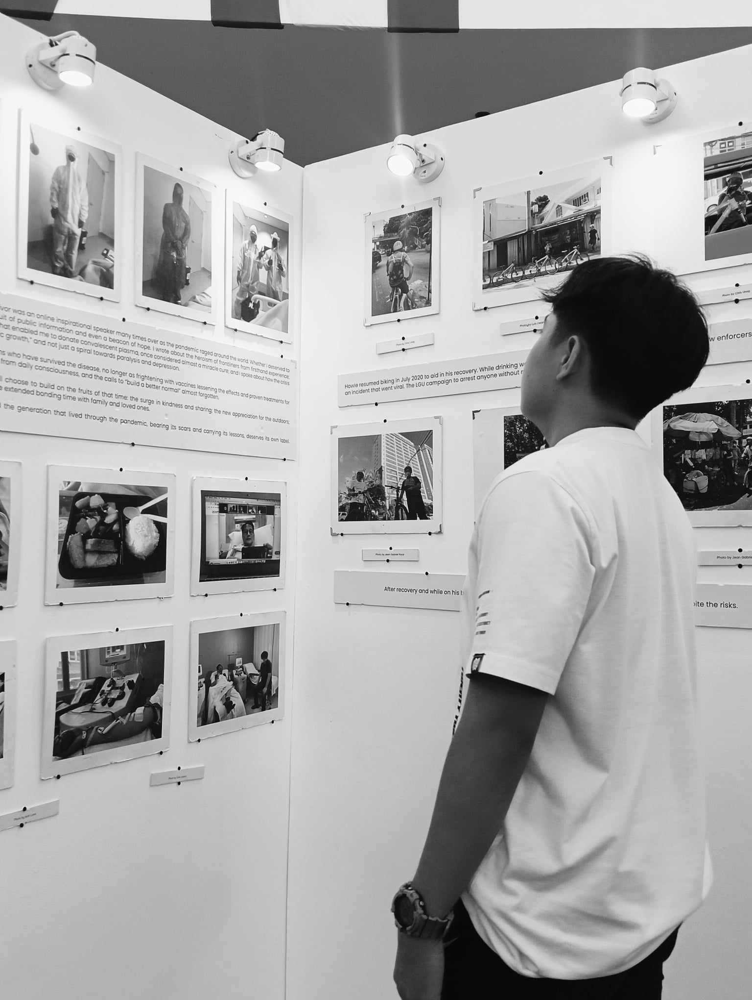

About Me
Hello, my name is John Miko Sarsalijo. I’m a first-year Computer Science student at the University of Perpetual Help System DALTA. I don’t have a deep passion for Data Science, but I’m exploring the field and excited to learn more about data-driven decision making, data visualization, and machine learning.
Specialization
I’m focused on Data Science as my specialization. Although it’s not my passion, I’m eager to explore how data can shape various industries, from business to healthcare, by providing actionable insights through statistical analysis, programming, and machine learning techniques.
My Philosophy
I believe in building a strong foundation in both theory and practice. My approach balances academic learning with hands-on projects, as I believe this combination leads to a deeper understanding of key concepts. The challenge of solving complex problems and the creativity involved in developing innovative solutions drives my interest in Computer Science.
Contact Information
Email: sarsalijojohnmiko15@gmail.com
Facebook: John Miko Sarsalijo